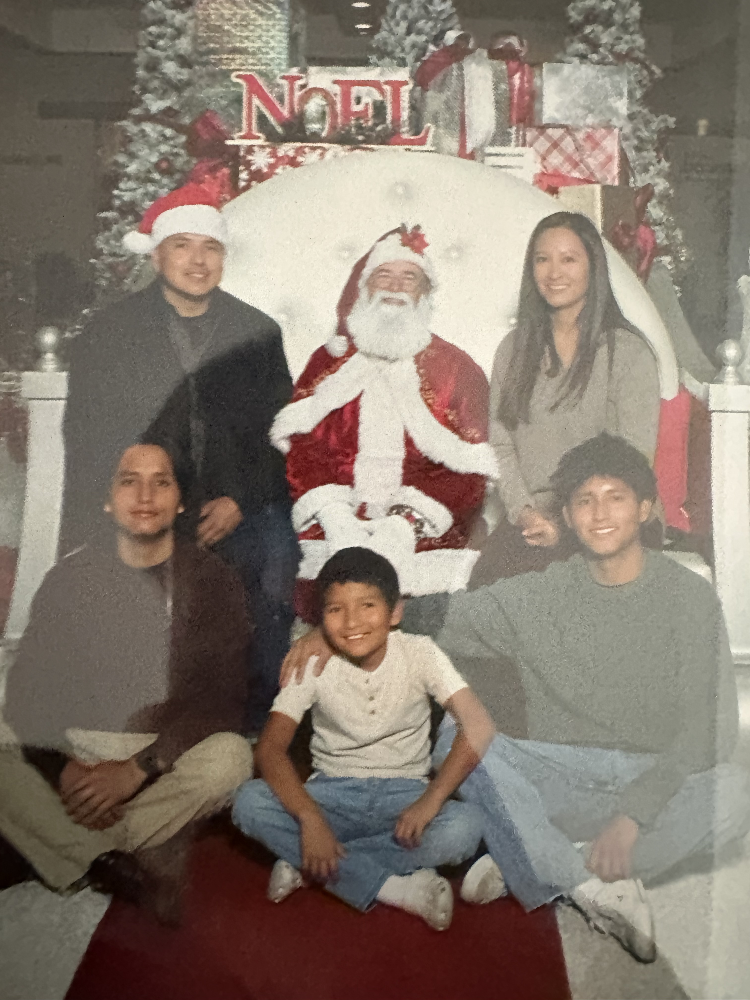
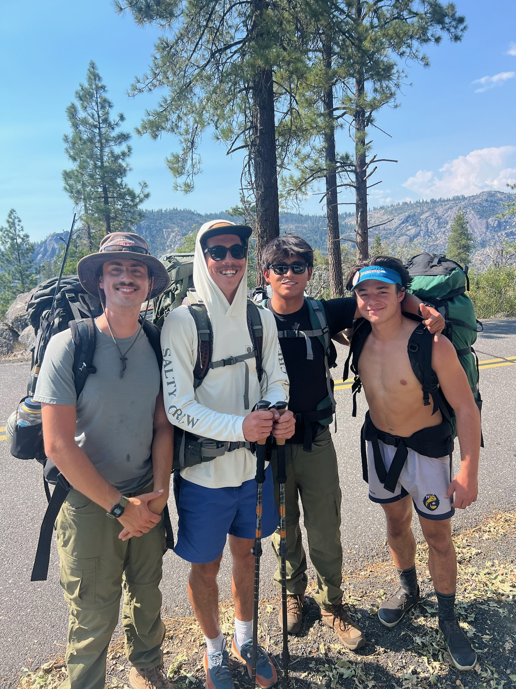
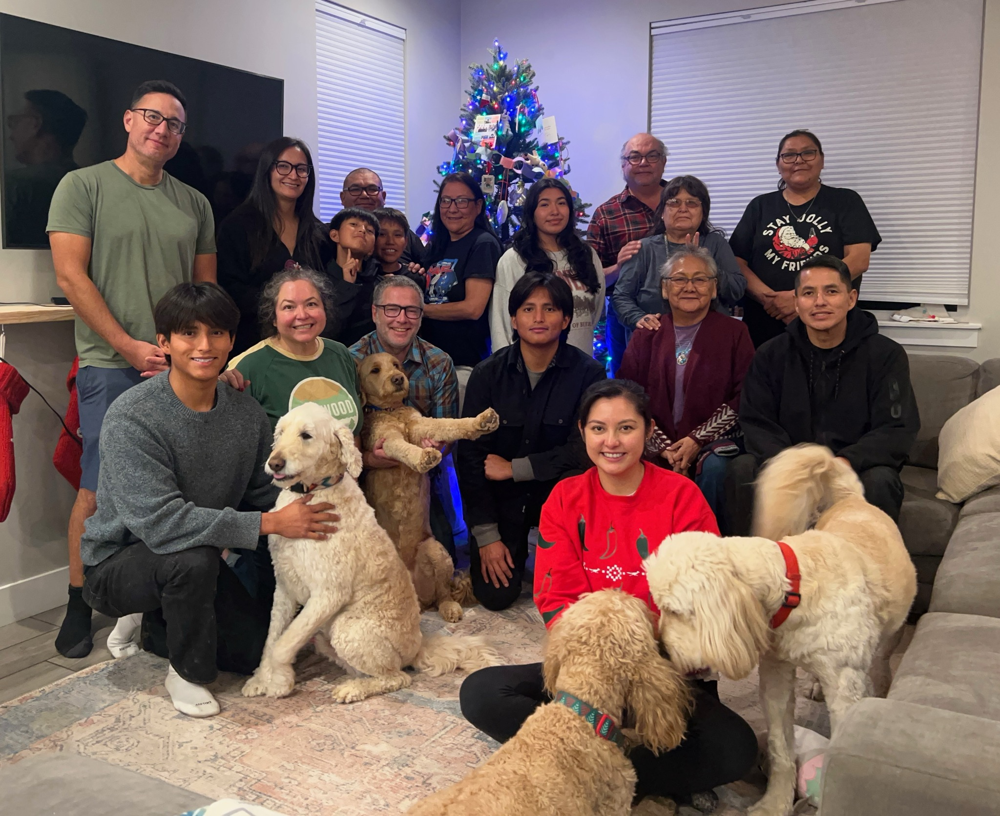

More Than Engineering.
The way I approach engineering is heavily influenced by the outdoors, endurance, hands-on work, and the people around me. I value systems that are reliable, practical, and built with real-world purpose.
Outdoors & Perspective
Outside of engineering, much of my life revolves around surfing, snowboarding, backpacking, endurance events, and spending time outdoors. These experiences taught me adaptability, patience, and how to remain calm under pressure — skills that naturally carried into how I approach engineering projects and problem solving.
Whether I am troubleshooting hardware, redesigning a mechanical system, or testing embedded electronics late into the night, I enjoy environments that require resilience, iteration, and continuous improvement.

Family has always been one of my biggest sources of motivation and support.
Discipline & Endurance
Surfing, snowboarding, backpacking, and triathlons taught me discipline, consistency, and how to continue performing when conditions become uncomfortable or unpredictable. I enjoy setting difficult goals, improving over time, and learning from failure instead of avoiding it.
That same mindset carried directly into my engineering work, especially during my solar panel cleaning robot project where redesigns, hardware failures, and technical criticism pushed me to continuously improve the system instead of settling for an average solution.

Completing the biking portion of an Olympic triathlon with friends.
Hands-On Engineering
A large part of my interest in engineering came from working with my father on construction, mechanical repairs, and fabrication projects growing up. From rebuilding motorcycles and vehicle maintenance to helping work on our family Chevy C10 truck, I became interested in understanding how systems operate beyond theory.
Backpacking and mechanic work also taught me to appreciate simplicity, reliability, and self-sufficiency. I enjoy building things with my hands, troubleshooting real systems, and understanding the physical side of engineering rather than only working behind a screen.

Backpacking through Yosemite.
Long-Term Vision
Long term, I hope to work on technologies that combine sustainability, embedded systems, power systems, and clean energy infrastructure. I want to contribute to systems that are technically meaningful, scalable, and capable of creating measurable real-world impact.
I am especially interested in building technologies that improve energy reliability, accessibility, and efficiency while staying connected to the communities and environments that inspired me to pursue engineering in the first place.

The people who matter most to me.